{kind=link}
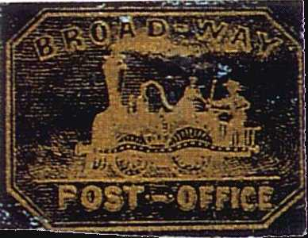

Return To Catalogue - United States locals overview - Bouton to Brigs - Cheever&Towle to City Letter Express - United States
Note: on my website many of the
pictures can not be seen! They are of course present in the cd's;
contact me if you want to purchase the catalogue.
Two stamps were issued in black on gold (in 1849?) and in black (1851?). The two images above were found on http://alphabetilately.com/US-trains-00.html (a splendid website with plenty of information on US locals with trains on it). Many forgeries exist, examples:
Hussey forgeries?
I think the stamp above is printed by Thomas Woods for George Hussey in 1866. Note that the word "POST OFFICE" is written too low and that the "B" of "BROADWAY" is much 'flatter' than in the genuine stamp. The "O" in "BROADWAY" should be elliptic (and not round).
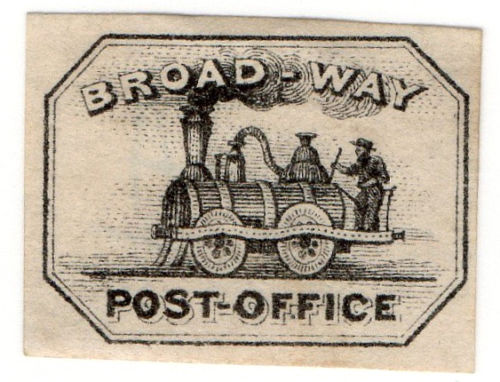
I've been told that this is a Hussey forgery as well, but the
design is different from the above Hussey forgery.
Taylor forgeries
I've been told that the above stamps are Taylor forgeries.
(Forgeries, reduced sizes)
Another highly dubious item.
(Forgeries in the wrong design, reduced sizes)
Image found on http://alphabetilately.com/US-trains-00.html. This local post operated in Chicago in 1856-57, two values were issued: black on green and black on lilac. Be careful, many forgeries exist (the above pictures are genuine, however, the red handstamp is faked). This post didn't use cancels normally, but a black circular datestamp is known.
Reduced size, genuine, with large 'BRONSON & FORBES EXPRESS
POST' cancel.
Forgery or reprint?:
Dove carrying letter in an oval (1853)
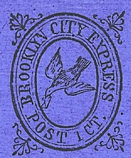
(Genuine stamps)
(Reduced size)
1 c black on blue 1 c black on green 2 c black on blue 2 c black on red 2 c black on lilac 2 c black on orange
Reprint recognizable with the break in the upper left hand side
hart-shaped ornament.
In the next forgeries, the word "CITY" is very near to the words "BROOKLYN" and "EXPRESS". There is always a break in the inner frameline left to the "OO" of "BROOKLYN".
I've seen this forgery in a number of (bogus) colors: black on red, black on yellow, red on blue, blue on grey, brown on lilac, red on yellow.
Forgeries with strange '1'.
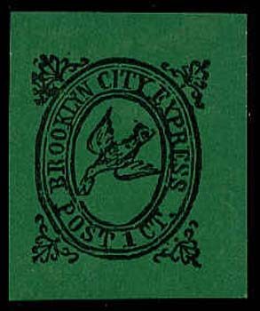
Forgery
Other forgeries:
The upper wing is very rounded in the above forgeries.
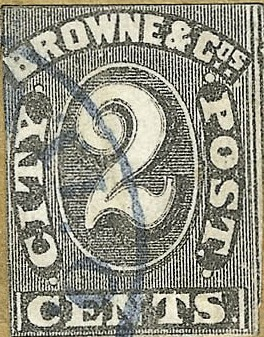
(Images obtained from a Siegel auction)
(Forgery of the 2 c value)
I have also seen the values 1 c red, 1 c green, 1 c orange and 2 c brown. These are probably forgeries.
Forgery, note the left foot of the '1' which is totally different
from the genuine stamp.
The 1 c forgeries shown above don't have any text in the '1', the
lettering is also different, for example the 'O' of 'POST' has a
very narrow central part. The last forgeries are in black on very
intense blue paper. I've seen the 1 c forgery in the color green
as well.
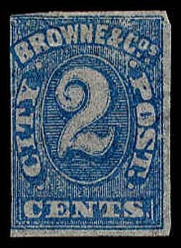
I've been told that the above forgeries are Moens forgeries. I
have no further information.
A reprint with two 2 c red stamps was issued in a minisheet for the Cincinnati Stamp Collectors Branch No.2 in August 1936.
(Genuine stamps, images obtained from a Siegel auction)
Only the 2 c black on red was issued in 1857.
Forgeries:
Forgery, 2 c black on violet with lettering completely different.
Same forgery, reduced size, but in color red.
I've also seen black on red forgery in the above shown design.
Another forgery with different lettering and border.
Another type was issued with the same inscription, but the border with stars.
(Genuine, reduced size, image obtained from a Siegel auction)
A stamp with George Washington was also issued with inscription 'BROWNES Easton Despatch TWO CENTS' (colour black). A forgery of this stamp was made by Scott; according to the image of this forgery given in 'Philatelic Forgers, Their Lives and Works' by Varro E. Tyler, the 'S' of 'BROWNES' is not placed above the 'P' of 'Despatch'.
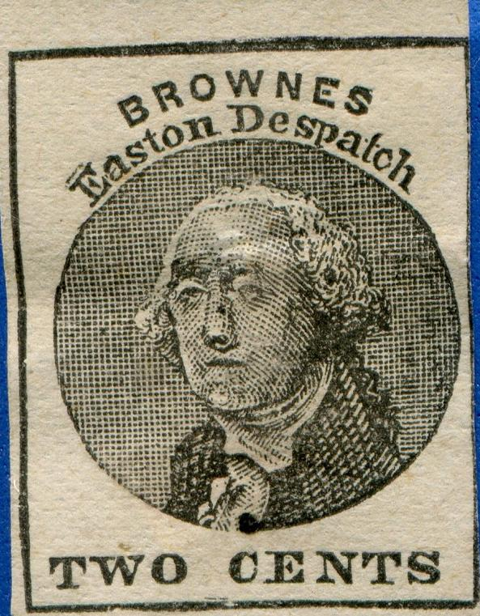
The Scott forgery.
Another forgery. The lettering is slightly different and the
printing is quite bad. For example, the "S" of
"CENTS" is placed too far from the "T" of
this word. I've also seen this forgery in black on yellow color.
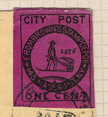
Inscription 'From Brown's Stamp Depot'; these stamps were made for stamp collectors. Brown was a stamp dealer...... I've also seen 1 c black on red and black on green values.
A bogus issue with a devil and pitchfork on it exists:
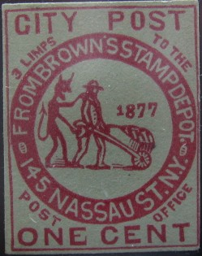
Bogus issue
Two stamps were issued; 1 c embossed on blue (star in ellipse) and 1 c black on blue (star in circle). Sorry, no images available yet.
(Genuine, reduced size, image obtained from a Siegel auction)
It seems that there exists only one stamp of this local delivery service (it was only discovered in 1950). It was issued somewhere between 1848 and 1850.
(Genuine, reduced sizes, images obtained from a Siegel auction)
These stamps are extremely rare; they exist in red, blue and green (there also seem to exist three different types).
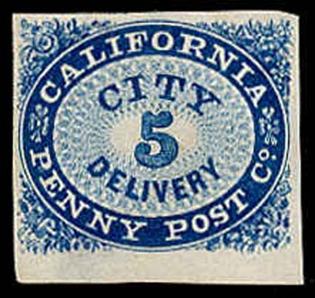
Genuine 5 c stamp
(Genuine, reduced size, image obtained from a Siegel auction)
In the above design was issued a 3 c, 5 c and 10 c (all in colour blue) in 1855.
Other stamps issued by this company:
(Genuine, reduced sizes, images obtained from a Siegel auction)
Besides stamps some envelopes were issued as well.
I presume that the following designs are bogus issues:
I've also seen this bogus issue in the color black on blue.
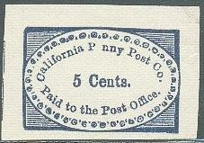
Other bogus issue
I have also seen postal stationery of this company.
red
I have seen a similar stamp in black, but it is a reprint or forgery. I've also seen the cancels 'PAID' in a rectangular box and an oval cancel. Stamps with 'CARNES' removed from the design were issued by the 'City Letter Express' (see there). Scott seems to have made 'reprints' (I've seen one cancelled with a blue cross), if anybody has information on how to distinguish these reprints, please contact me.

Reprints? The bear has a large white patch on his back in all the
above stamps.
Forgery
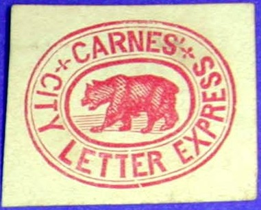
Scott forgeries of this stamp. There is a piece of fur sticking
out of the belly of the bear. In my opinion, the background lines
are too obvious.
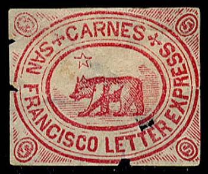
(Genuine)
(Reduced size)
5 c red 5 c bronze 5 c gold 5 c silver 5 c black 5 c blue
In a Siegel auction I have seen a sheet of 18 stamps (6 rows of 3) with the bottom 6 stamps printed upside down. I have seen bogus colours such as black on blue, lilac, green and yellow. I do not know if these stamps were ever genuinly used. I know that the forger Taylor made forgeries of these stamps (at least in the colours red, green and orange), if anybody has information concerning the distinguishing characteristics of these forgeries, please contact me!
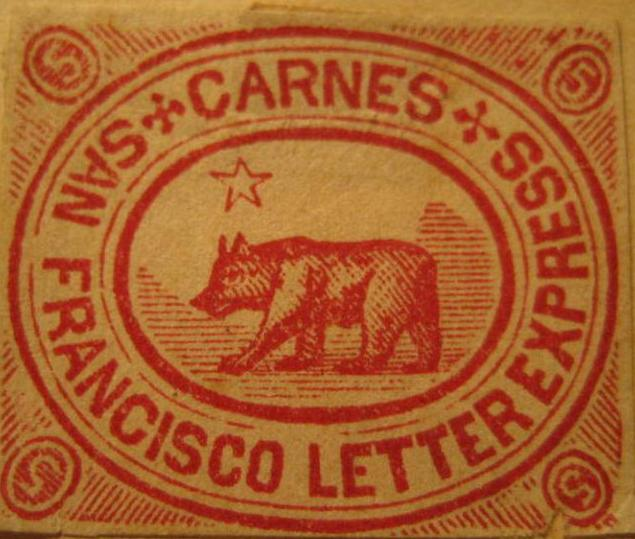
Highly dubious items, probably some kind of reprints.
Forgeries:
Star very weird, bear looks like a pig. Also note the very
strange "S" of "SAN".
Label(?) 'CARNES' EXPRESS Paid 2 cts.' in an ellipse; color blue.
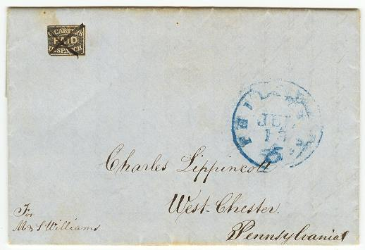
(On letter)
Only a 2 c black was issued.
Probably forgeries or reprints. In my opinion, the word
'DISPATCH' is too far from the bottom in the top stamp and too
close in the bottom stamp.
Bogus stamp in color blue.
I've seen an envelope with an inprinted oval seal 'OFFICE 90 N. FIFTH ST CARTER'S DISPATCH PAID' (seen on a Siegel auction).
Cheever&Towle to City Letter Express
{kind=link}
{kind=link}
{kind=link}
{kind=link}
{kind=link}
{kind=link}
{kind=link}
{kind=link}
{kind=link}
{kind=link}
{kind=link}
{kind=link}
{kind=link}
{kind=link}
{kind=link}